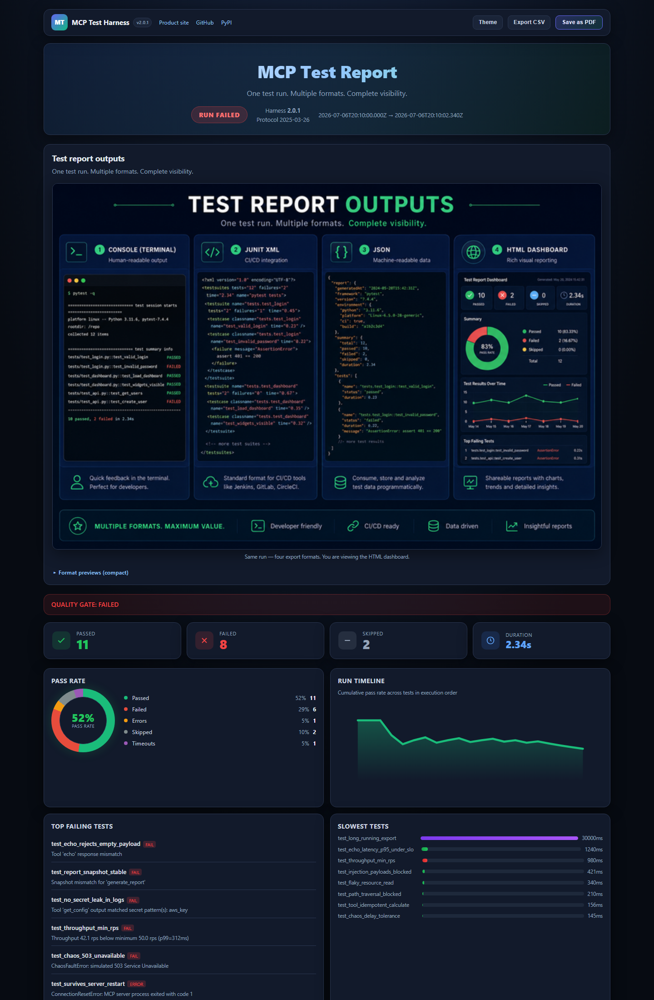
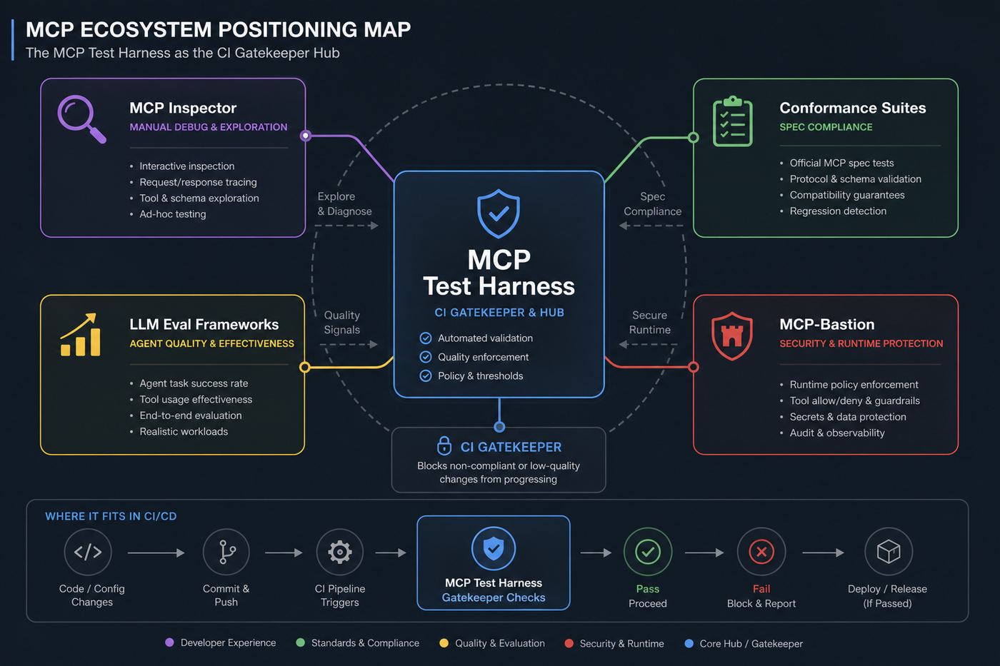
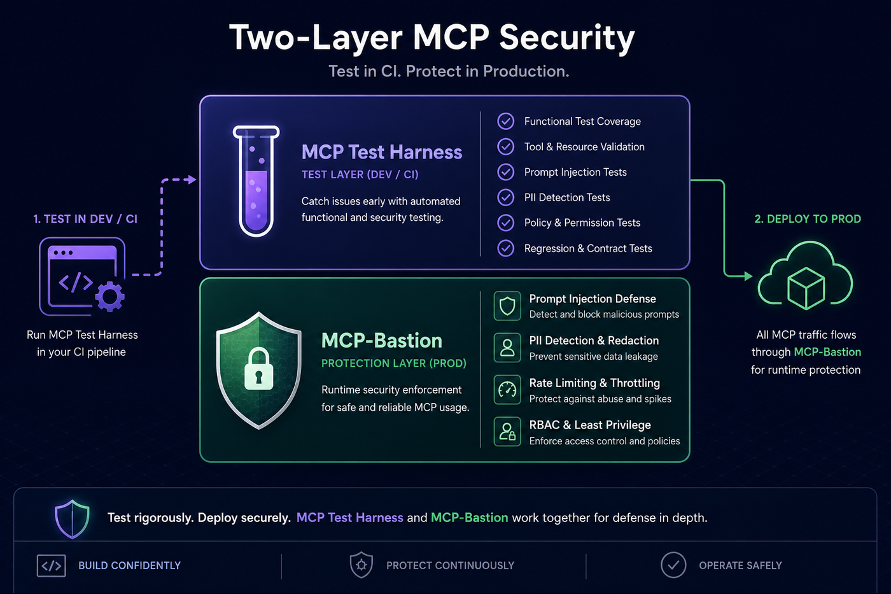
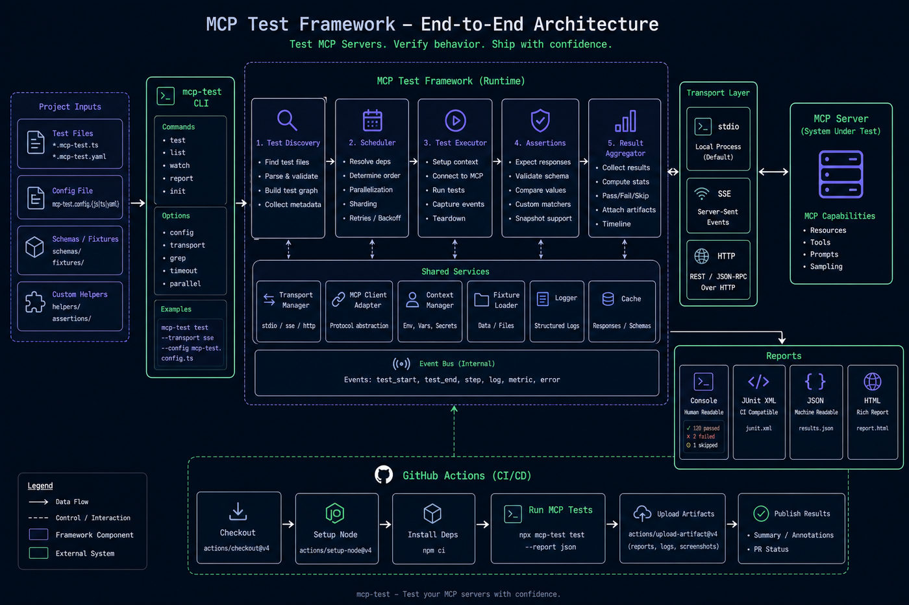
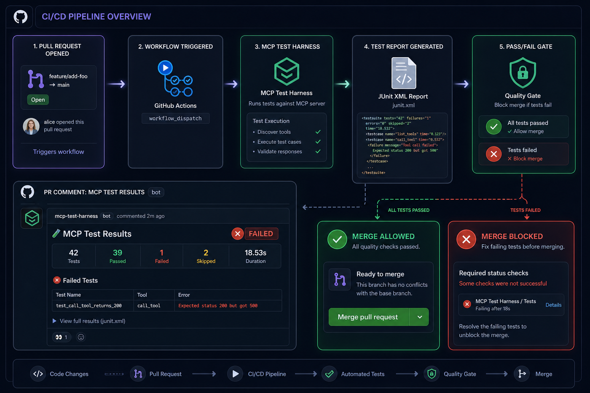

Docs / Documentation handbook
Documentation handbook
Concepts, security-first rationale, CI scan report, feature map, operate recipes, and companion Bastion references.
Visual tour (start here)
CI scan report
Self-contained HTML from mcp-test --report-format html: sticky scan TOC, quality-gate scorecard,
full OWASP/MCP findings table, MCP contract coverage %, portal scores. No hosted dashboard required.
Open sample report · SECURITY_TESTING.md

Scan → Test → Enforce
| Diagram | What it shows |
|---|---|
 |
Position vs Inspector, conformance, evals, Bastion |
 |
Test in CI · enforce at runtime |
 |
CLI → server → assertions → reports |
 |
PR gate with JUnit / SARIF / HTML |
Architecture at a glance
Developer / CI
│ mcp-test
▼
┌────────────────────────────┐
│ MCP Test Harness │ deterministic CI gate
│ fixtures · assertions │ functional / regression / perf / security
│ quality_gate · manifest │ SARIF + HTML scan report
└─────────────┬──────────────┘
▼
Your MCP server
│
▼ (production — companion product)
┌────────────────────────────┐
│ MCP-Bastion │ runtime allow / block / redact / observe
└────────────────────────────┘
How to use this handbook
| You want… | Go to |
|---|---|
| Install & first green run | Getting started · QUICK_START |
| Why security-first | Part 2 below |
| Quality gate / manifest rug-pull | Security testing · SECURITY_TESTING |
| Full API / config | DEVELOPER_GUIDE |
| Stateless SEP-2575 | TUTORIAL_STATELESS |
| CI artifacts / scan UI | CI & reports |
| Ecosystem map | compare.html · COMPARISON |
| Runtime enforce | Bastion handbook |
Repos: MCP Test Harness = CI test gate. MCP-Bastion = runtime security engine. They pair; they do not replace each other.
Part 1 — What the harness is
MCP Test Harness is a pytest-style, MCP-aware framework for Model Context Protocol servers. It is deterministic by default, CI-native, and code-first — no LLM judge in the loop.
| Property | Choice |
|---|---|
| Nature | Deterministic, reproducible, MCP-specific |
| Transports | stdio / SSE / HTTP (incl. stateless SEP-2575) |
| Modes | Functional · regression · performance · security · resiliency |
| Reports | Console · JUnit · JSON · HTML scan · SARIF · PR summary · CRA |
| Defaults | Safe; quality_gate / manifest_gate opt-in |
| Infra | Zero hosted dashboard — artifacts are files |
Part 2 — Why security-first
Agentic systems turn MCP tools into programmable privilege. A single compromised tool description, missing auth boundary, or silent schema change can move data, mutate systems, or burn budget — often without a human in the loop.
Why “test later” fails for MCP
| Reality | Risk if you wait |
|---|---|
| Tools are callable by models | Prompt injection and confused-deputy abuse |
| Schemas + descriptions are the API | Rug-pull / supply-chain drift after merge |
| Agents retry and fan out | Latency and error rate become outages |
| Secrets appear in tool I/O | Leakage into logs, traces, and model context |
| Spec revisions land frequently | Silent protocol breakage across clients |
What the harness owns (CI)
- Auth boundaries (
assert_tool_denied,assert_authorization_boundary) - Payload packs (injection, path traversal, secret leak)
- OWASP-MCP / OWASP-LLM rule metadata (SARIF + HTML scan)
- Opt-in
quality_gate:— require security tests, fail on severity - Opt-in
manifest_gate:— merge-time rug-pull baseline - Contract coverage map (advertised vs tested)
What Bastion owns (runtime)
See the Bastion Documentation handbook: prompt guard, PII vault/redaction, rate/cost, RBAC, schema validation, replay, proxy boundary, local dashboard.
Scan / config (mcp-shark, Bastion scan)
→ Test / CI gate (this harness)
→ Enforce / runtime (MCP-Bastion)
Skipping the middle step is how teams ship green dashboards and still get surprised in production.
Part 3 — CI scan report
The HTML report is a static scan artifact, not a multi-tenant SaaS product — same nature as Bastion docs: rich evidence, no always-on platform to operate.
| Panel | Why it exists |
|---|---|
| Sticky Scan TOC | Jump Gate → Security → Coverage → Results |
| Scan overview | Gate, findings, contract %, manifest, flaky |
| Quality gate scorecard | Policy knobs + reasons + severity histogram |
| Security findings table | Full OWASP/MCP rows (sev, rule, file, help) |
| Contract coverage | % ring + untested / missing-auth issues |
| Unified portal | Functional / perf / security / resiliency scores |
| Bastion pairing | CI verifies ↔ runtime enforces |
mcp-test --report-format html --report-output report.html mcp-test --sarif-output findings.sarif mcp-test --pr-summary-output mcp-pr-summary.md
# mcp-test.yaml quality_gate: require_security_tests: true fail_on_severity: high manifest_gate: enabled: true path: __snapshots__/mcp_manifest.snap
Part 4 — Feature map
| Family | Examples |
|---|---|
| Protocol fixtures | mcp_server, lifecycle, schema validation |
| Correctness | assert_tool_call, resources, prompts, capabilities |
| Regression | assert_snapshot, idempotent, manifest snapshot |
| Performance | latency, throughput, stateless throughput, baselines |
| Security | payloads, auth, SARIF, quality_gate, OWASP rules |
| Resiliency / chaos | experiments catalog, protocol-aware faults |
| Conformance | mcp-test try, RFC-002 / RFC-006 |
| Moat (Tier 1) | manifest rug-pull · history/trends (next) · flakiness · version matrix |
Do not build: LLM playground, always-on hosted dashboard, out-scanning mcp-scan on general threat intel, datacenter-scale generic load farms. See ROADMAP.md.
Part 5 — Operate
| Task | Command |
|---|---|
| Scaffold | mcp-test init |
| Run suite | mcp-test / mcp-test -m security |
| Manifest gate | mcp-test manifest check|update|show |
| Zero-config probe | mcp-test try · mcp-test doctor |
| Stateless certify | mcp-test conformance stateless --url … |
| Docker | docker run --rm ghcr.io/vaquarkhan/mcp-test-harness:latest --version |
Part 6 — Learning paths
- Developer (30 min): Getting started → feature demos → one HTML report locally
- Security reviewer: Part 2 → Security testing → enable gates → SARIF → Bastion handbook
- Platform / perf: PERFORMANCE → baselines → RFC-006 stateless
- Compliance: CRA_COMPLIANCE → ENTERPRISE_GOVERNANCE → evidence packs
Asset index
| Asset | Path |
|---|---|
| Feature overview | docs/images/mcp-testobarness-feature.png |
| Ecosystem map | docs/images/ecosystem-map.png |
| Harness ↔ Bastion | docs/images/harness-bastion-pairing.png |
| Sample HTML report | html/reports/sample_mcp_test_report.html |
| Source handbook | docs/HANDBOOK.md |
| Docs site | html/guide/ |
Related published pages & end references
This project
- Docs hub
- Documentation handbook (this page)
- Product site
- Compare · Examples · Sample scan report
- GitHub · PyPI
- Source markdown
Companion & external references
| Reference | Why it matters |
|---|---|
| MCP-Bastion Documentation handbook | Canonical runtime security handbook — attack→defense, dashboard, pillars |
| MCP-Bastion | Enforce in production what CI verified |
| Bastion attack demos | Runnable ATTACK → BLOCK/REDACT stories |
| Bastion feature deep dive | Issue → control → benefit for every pillar |
| mcp-shark | IDE / config-time MCP security scanning |
| OWASP Top 10 for LLMs | Shared taxonomy for findings (OWASP-LLM) |
| Model Context Protocol | Protocol specification the harness exercises |
| EU Cyber Resilience Act | CRA evidence packaging context |
| SARIF standard | GitHub Code Scanning upload format |